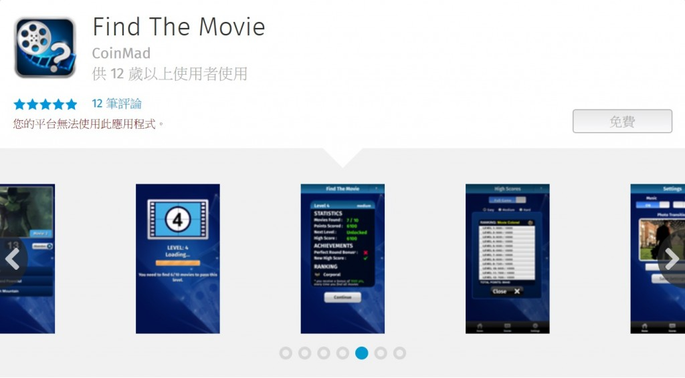

我們在幾天前已經正式介紹「Flame」，也是由 T2Mobile 專為開發者、評論家、測試人員所製造的 Firefox OS 參考平台手機 (Reference device)，現已於 everbuying.com 預購頁面上正式販售。零售價 $170 美元並含全球運費。
強力募集 Firefox OS 的酷炫 App

如果你是有經驗的 HTML5 App 開發者，也曾上架過 App 且獲得不錯評價，現在也想讓你的 App 在 Firefox OS 上使用，就快通知我們吧！我們十分歡迎一流的 App (如上圖 PhoneGap 的「Find the Movie」App 現已能在 Flame 上執行) ，並期待 App 能從原生平台移植到 Firefox OS。我們將保留幾支 Flame 手機，鼓勵符合資格並且願意做移植的 HTML5 App 開發者。

符合資格的條件
透過長期的 Phones for Apps 專案，我們將限額邀請 App 開發者。只要開發者在收到「Flame」手機的一個月內，將符合條件的 HTML5 App 移植完成，就能自己保有這支手機。現在就到這裡申請。
只有三項條件符合資格：
- 你已經在其他平台 (如 Amazon Web App、Blackberry WebWorks、Chrome Web Store、WebOS、Windows Phone、PhoneGap 等) 上成功寫出高評價的 HTML5 App，並準備移植到 Firefox OS。
- 你已經透過跨平台的 wrapper (如 Cordova 或 PhoneGap)，為 iOS 或 Android 寫出高評價的原生 App，並準備移植到 Firefox OS 之上。但請確實註明你所使用的跨平台工具。
- 你已經在 Firefox Marketplace 上發佈 App 並獲得高評價，而且現正開發或已開發第二個 App，並準備移植到 Firefox OS 之上。
相關資源
- 進一步了解「Flame」 (MDN 文章)
- 開始入門 Open Web App (MDN 文章)
- 特別注意 6 月 26 日的 Marketplace Day ─ 主題全都是 App 與相關貢獻方式。不論你是 App 開發者、評論家、測試人員、協助本地化的翻譯人員，都歡迎加入我們！